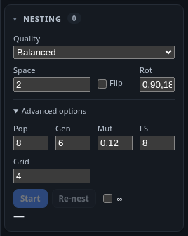

Tab Nesting
Nesting menyusun loop tertutup di atas lembar (sheet) menggunakan algoritma genetika (GA) + No-Fit Polygon (NFP), sepenuhnya di browser — tanpa server.


1. Pengaturan nesting
| Pengaturan | Keterangan |
|---|---|
| Sp (Spacing) | Spasi antar bagian dalam mm (setiap bagian di-offset setengah nilai di setiap sisi sebelum dipaketkan). |
| Grid | Grid snap: langkah pemindai NFP dalam mm. Semakin kecil = pemaketan lebih rapat tetapi jauh lebih lambat. |
| Rot (Rotation) | Rotasi yang diizinkan: daftar sudut (0,90), preset (1,2,3,4,8), atau range 0-360:90. Sama seperti nestjs2. |
| Flip | Izinkan membalik bagian selama pemaketan. |
| Pop (Population) | Ukuran populasi GA. |
| Gen (Generations) | Jumlah generasi GA. |
| Mut (Mutation) | Rata mutasi GA (0 = urutan orang tua dipertahankan, 1 = selalu diacak ulang). |
| LS (Local search) | Percobaan mendaki lokal setelah GA (0 = mati; semakin sedikit = lebih cepat tapi sedikit lebih longgar). |
2. Tombol kontrol
| Tombol | Keterangan |
|---|---|
| Start | Nest loop terpilih ke kanan lembar hijau (sheet loop). |
| Re-nest | Nest bagian yang sama lagi tanpa memilih ulang (mengganti hasil sebelumnya). |
| Stop | Berhenti dan simpan hasil terbaik saat ini. |
| ∞ (Infinite) | Terus re-nest dengan benih GA segar sampai Stop; hanya tata letak terbaik yang diterapkan. |
Semua proses berjalan di browser (worker). Untuk file besar, jendela bisa membeku beberapa saat saat dibangun. Nyalakan "keep each group as one object" di impor untuk membuatnya jauh lebih ringan.
3. Cara kerja
- Pilih loop tertutup yang ingin disusun di kanvas.
- Buka panel Nesting di sidebar kanan.
- Atur spasi, grid, rotasi, dan parameter GA sesuai kebutuhan.
- Klik Start. Hasil tata letak diterapkan ke kanvas.
- Gunakan Re-nest untuk mencoba lagi, atau Stop untuk mempertahankan hasil terbaik.
Drag wall (W) juga berguna untuk nesting manual: geser pilihan dengan amplop offset hidup yang berhenti di posisi bebas collision terakhir. Baca halaman Arrange untuk detailnya.